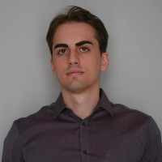

Samuele Partacini
Uncrewed Vehicles Software Engineer @ IDV | Human Machine Interface (HMI)
samuele.partacini@gmail.com
Summary
I'm a Software Engineer from Milan, Italy. I graduated in Computer Science and Engineering at Politecnico di Milano.
My thesis was about camera-based localization for an autonomus race car that participated
to the Indy Autonomous Challenge.
Since then, I have been working in the field of uncrewed ground vehicles, specializing in
Human Machine Interface (HMI) design and development for remote control and monitoring of autonomous
systems. My core skills include software development, user interface design, and system integration.
I recently started exploring the field of web development, by enrolling in the
Full-Stack Web Development Bootcamp
by Angela Yu.
Education
-
2012-2017 | High School Diploma in Electronics @ ITIS Feltrinelli, Milan (IT) | Votation: 100/100
- Thesis project based on the design of a Robotic Hand and awarded at the ‘Tecnicamente
2017’ contest held by Adecco.
- ‘Excellence award’ 2013-14 and 2015-16 by ITIS Feltrinelli.
-
2017-2020 | Bachelor Degree in Computer Engineering @ Politecnico di Milano, Milan (IT) | Votation: 110/110
- ’Best freshmen award’ 2017-18.
-
2020-2022 | Master Degree in Computer Science and Engineering @ Politecnico di Milano, Milan (IT) | Votation: 110 cum laude/110
- Courses attended: Software Engineering 2, Foundations of Operations Research, Artificial
Intelligence, Formal Languages and Compilers, Data Bases 2, Advanced Computer
Architectures, Computer Security, Computing Infrastructures, Model Identification and
Data Analysis, Machine Learning, Knowledge Engineering, Artificial Neural Networks and
Deep Learning, Automation and Control in Autonomous Vehicles, Multiagent Systems,
Principles of Programming Languages, Technologies for Information Systems, Internet of
Things, Computer Ethics, Automation and Control in Hybrid and Electric Vehicles.
- Thesis: Development of Lane Detection Algorithms for vehicle’s localization on track.
I did my thesis at the MOVE reasearch group,
focusing on camera-based Vehicle’s Localization. During september 2022, I spent three weeks
in Indianapolis (IN, USA), to pareticipate in the testing activities for the Indy Autonomous Challenge 2022.
Work Experience
-
June 2016 | Intern @ ITIA CNR, Milan (IT)
- Analysis and automation of mechatronic systems, sensor project, control architecture project, design and implementation of control software, software validation.
-
Jan - Jul 2023 | Research Fellow @ Politecnico di Milano, Milan (IT)
- Development of algorithms and control systems for autonomous and semi-autonomous vehicles.
- June 2023: Unmanned Ground Vehicle training course held in Coventry (UK) by
Digital Concepts Engineering.
-
Jul 2023 - Present | Uncrewed Vehicles Software Engineer @ IDV, Bozen - Modena (IT)
- Software requirements, design and development for remote and autonomous driving,
with a focus on Vision System and Human Machine Interface (HMI).
- I participated to several on-field activities and demonstrations to clients as
responsible for the HMI and Vision System modules.
Skills
- Languages: Italian (native), English (fluent, C1), German (basic).
- Programming languages: C++, Python, Java, Javascript. HTML.
Computer Vision
- Vision System: Efficient video acquisition and transmission based on Nvidia Jetson
hw-accelerated Gstreamer plugins, with state of the art camera sensors and codec technologies.
Tools for end to end assessment of video latency and quality for real-time applications.
- Classical Computer Vision techniques for feature detection and matching.
- OpenCV and NVIDIA VPI libraries.
Robotics
- Deep knowledge of ROS2 framework.
- Autonomous stack: basic knowledge of main techniques for localization, planning, perception and control.
- Sensors: practical experience with cameras, lidars, GPS and IMU setup, deployment and data handling.
- Basic knowledge of CAN on-board communication technology.
HMI - Human Machine Interface
- HMI development with Qt and QML for C++ backend.
- HMI development with JavaFx and Scene Builder for Java backend.
Other skills
- Team Software development using GitHub and GitLab issues, merge requests, workflows and container registries.
- IoT: Wireshark, COAP, MQTT, Node-Red, Contiki, TinyOS, Thingspeak, Arduino, PlatformIO.
- AI: Classical AI algorithms, Neural Networks design and training with Tensorflow and Keras, Multiagent planning and learning.
- Computer security fundamentals.
- Linux Ubuntu operating system.